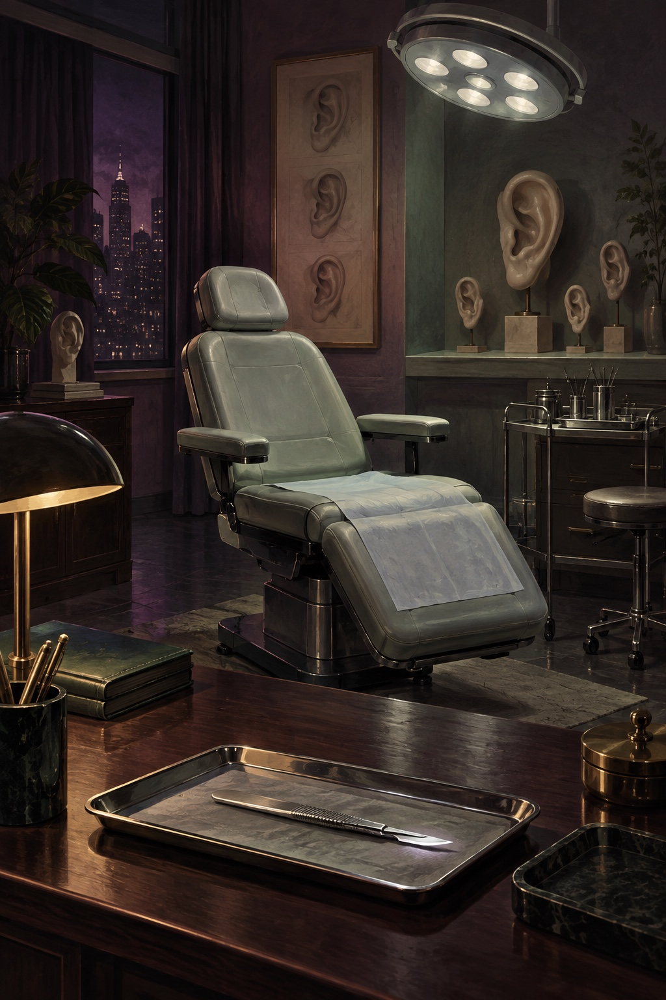
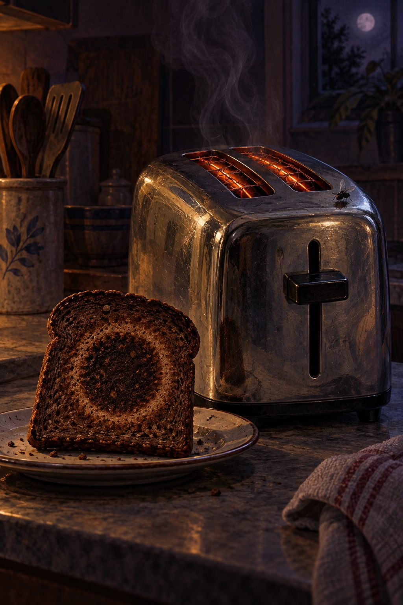
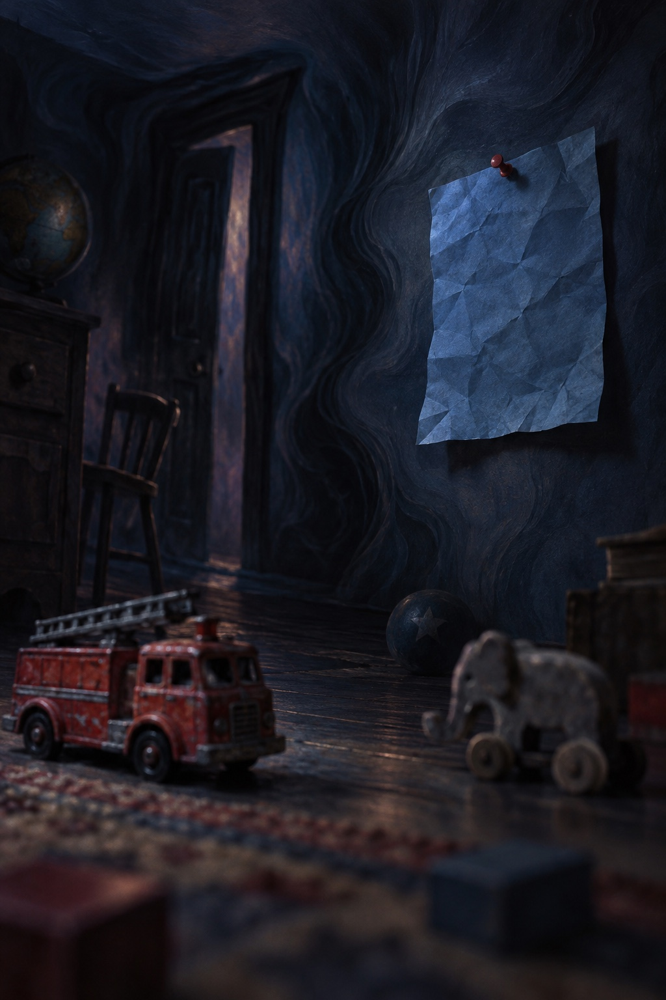
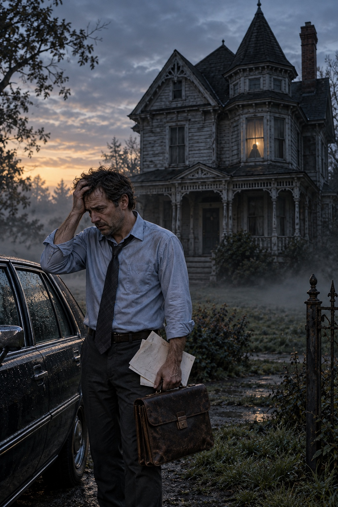

Published November 2, 2025
The Drastic Surgeon
Venal plastic surgeon Dr. Silas Carver will entertain any request—until a young woman asks for two more ears.
Sulfur Surrealist Jungle
Read OnlineShort Fiction
Selected published work.

Venal plastic surgeon Dr. Silas Carver will entertain any request—until a young woman asks for two more ears.
Sulfur Surrealist Jungle
Read Online
In increasingly erratic journal entries, a man’s suspicion that a kitchen appliance is misbehaving becomes a darkly comic crisis of burnt toast, vanishing flies, and object permanence.
Patterns Anthology · Bag of Bones Press
Buy on AmazonAfter a night of ghost stories beside a cemetery, Angela hears her name carried from Charon’s forbidden island.
Flash Phantoms
Read Online
Jonathan wakes from a nightmare haunted by fragments of childhood—an off-key dirge, a crumpled blue page, and a memory that refuses to stay buried.
Stygian Lepus
Read OnlineBeneath the guise of a grizzled gardener, Bert Tumnus enters the lush world of Calathea Pomona, a botanist whose visible and invisible scars reflect his own.
Bewildering Stories
Read More
A philandering husband returns to his Victorian home before dawn with divorce papers in hand, rehearsing his plea for forgiveness.
3 Panels Press
Read Issue